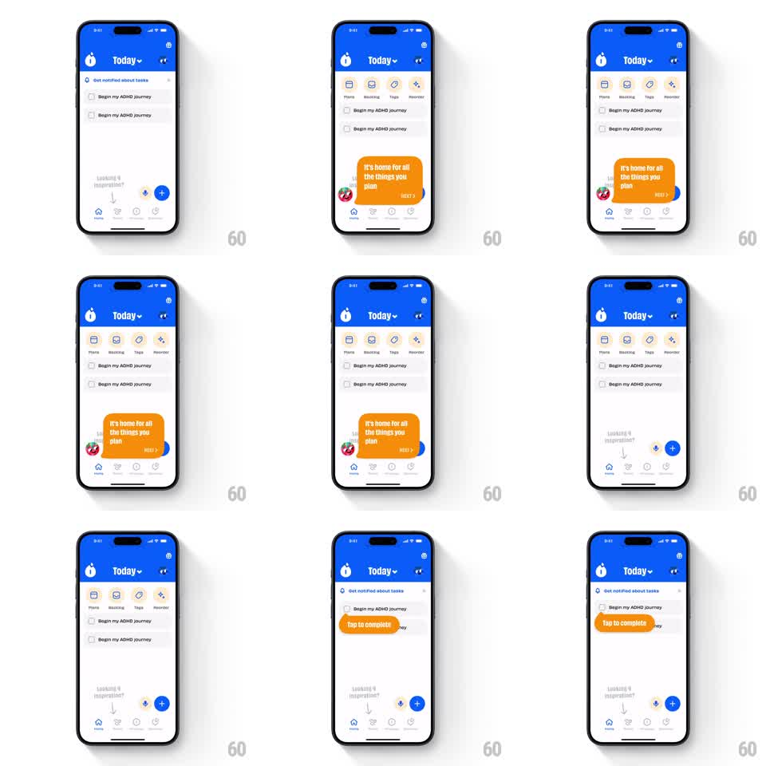

Media
Frame-by-frame

Rebuild this animation 1:1: Numo's onboarding tooltip chain - tapping NEXT makes the current orange tooltip shrink-pop out with springy physics while the next tooltip scales up pointing at its target, walking the user across the screen.

Rebuild this animation 1:1: Numo's onboarding tooltip chain - tapping NEXT makes the current orange tooltip shrink-pop out with springy physics while the next tooltip scales up pointing at its target, walking the user across the screen.
## Integration
Integration: stack-agnostic spec - springs given as stiffness/damping, timed motions as duration + curve; map every value to your framework and animation library of choice.
## Scene
Blue-header task screen: "Today" title, a top icon row (Plans, Backlog, Tags, Reminders) that appears during the tour, task list ("Begin my ADHD journey" rows), FAB, tab bar. Tooltips: orange rounded bubbles with white copy and a NEXT button, anchored with a small tail to UI elements (bottom area first, then a task row).
## Motion spec
Pattern: tooltip tour with pop handoff, ~500ms per handoff.
- Tooltip idle: gentle bob (translateY +-3px, 2s loop).
- NEXT tap: button presses (scale 0.94, 80ms); the tooltip shrinks to scale 0.6 and fades out toward its tail anchor (180ms, ease-in) with a tiny spring overshoot on the shrink.
- 80ms later the next tooltip scales up from its own anchor point (scale 0.5 -> 1, spring ~400/18, 300ms), its tail aimed at the new target.
- If the target is off-screen or hidden (e.g. the top icon row), that UI fades/slides in first (250ms), then the tooltip pops.
## Calibration
- Outgoing tooltip collapses toward its tail, incoming grows from its tail - the anchor is the transform origin, never the bubble center.
- The 80ms gap between pop-out and pop-in is the rhythm; overlapping them reads as a crossfade between unrelated bubbles.
## Reduced motion
Old tooltip fades out, new one fades in (200ms each), no scale.
## Don't miss
- Each tooltip's tail points at a real element; a floating bubble with no anchor fails the tour.
- The tour always shows exactly one tooltip - two on screen at once is a bug, not a style.